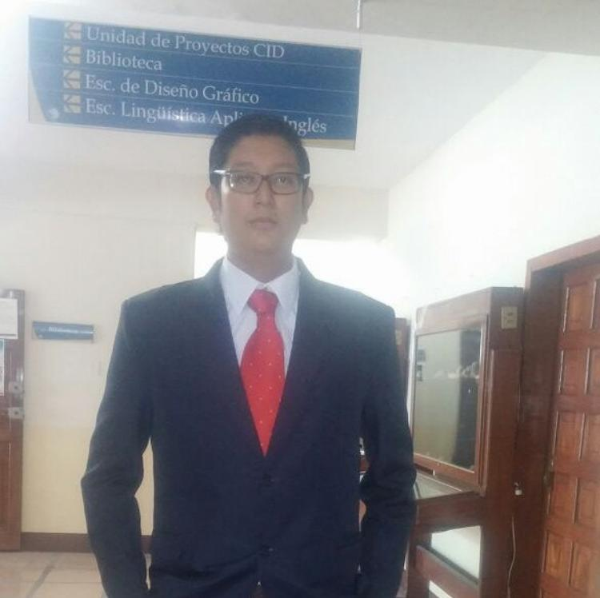

CV de Cesar Saavedra
Desarrollador Web Junior
Varios proyectos de desarrollo web y aplicaciones de escritorio
Estudios
- Ingenieria en Sistemas y Computacion
- 2012 - 2017. Pontificia Universidad Catolica del Ecuador

Experencia Profesional
- Asistente de redes y Telecomunicaciones
- 2015 - 2017. Monitoreo, documentación y mantenimiento de redes, instalación de redes LAN y Wireless, configuración de equipos de comunicación (switch, router).
- Docente de Matematicas
- 2018 - Actualidad . Impartir conocimiento a los estudiantes de ingeniería de la Universidad Técnica Luis Vargas Torres de nivelación.
Proyectos
- Instalacion y configuracion de red lan
- Julio 2015 - Agosto 2015. Instalar red de datos en las oficinas de la institución GAD Parroquial rural Carlos Concha Torres .
- Tienda online
- Septiembre 2018 - Noviembre 2018 .Desarrollo de tienda online de ropa bajo el asistente de contenido wordpress
- Control de asistencia estudiantil y seguimiento docente
- Septiembre 2018 - Noviembre 2018 . Sistema realizado en la plataforma excel y lenguaje VBA para facilitar el control de asistencia y registro de temas impartidos por el docente